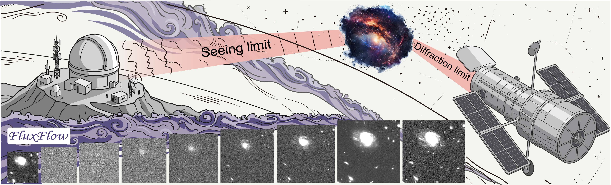
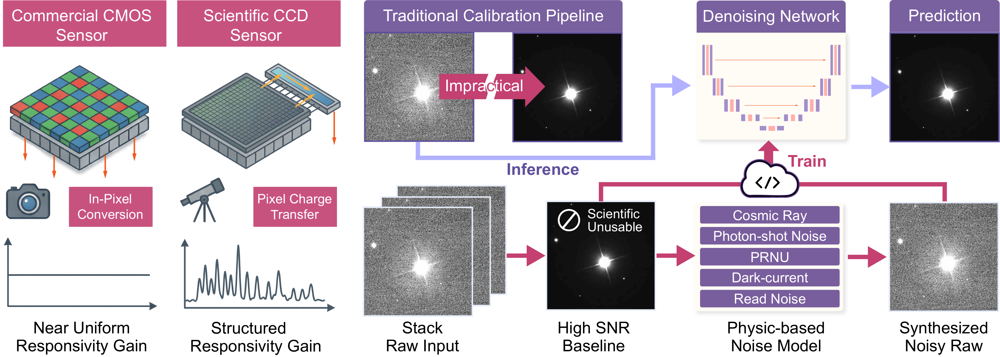
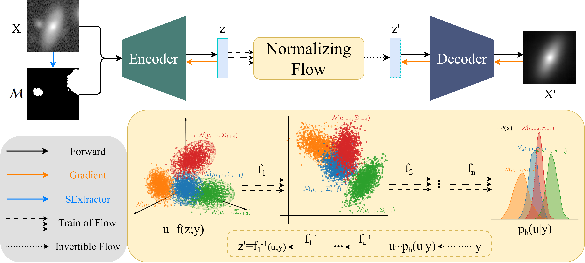
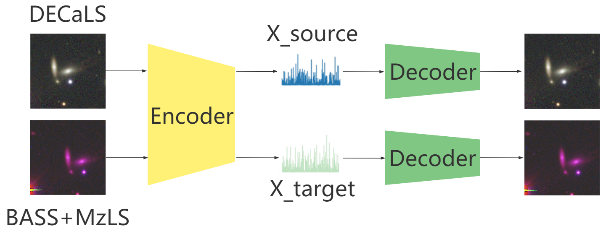
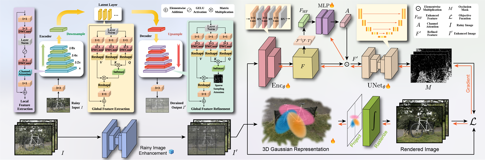
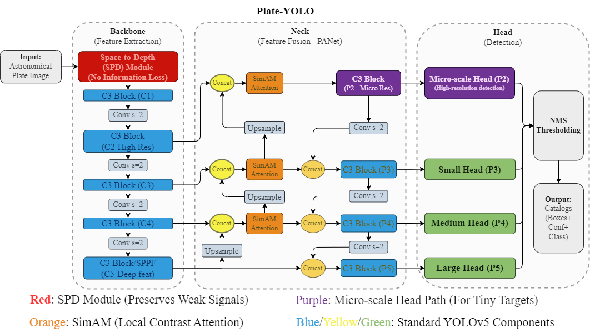
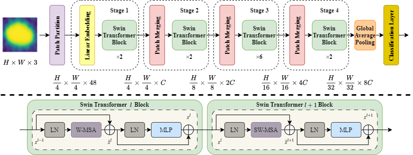
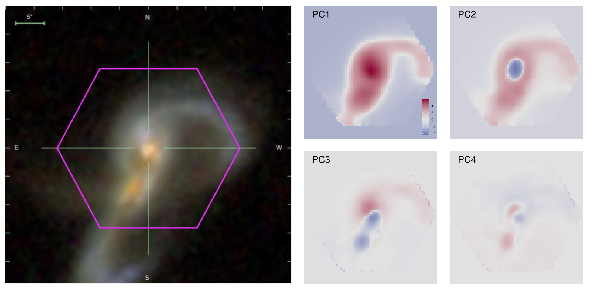
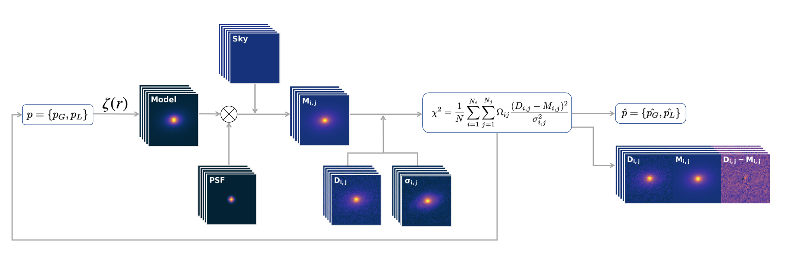

[← Home] [ORCID] [Google Scholar] [OpenReview]
Deep learning and generative models for astronomical images: morphology classification, galaxy image generation, super-resolution and denoising.
 |
FluxFlow: Conservative Flow-Matching for Astronomical Image Super-Resolution |
 |
Denoising the Deep Sky: Physics-Based CCD Noise Formation for Astronomical Imaging |
 |
From Non-parametric Statistics to Images: Generating Galaxy Morphologies |
 |
From images to features: unbiased morphology classification via variational auto-encoders and domain adaptation |
Gaussian Splatting and neural reconstruction for 3D scene understanding in adverse weather, extended to large-scale reconstruction.
 |
DeRainGS: Gaussian Splatting for Enhanced Scene Reconstruction in Rainy Environments |
Deep learning pipelines for digitising, classifying and astrometrically registering Chinese historical astronomical plates.
 |
Plate-YOLO: An End-to-End Object Detection Framework for Robust Astrometric Registration of Historical Plates |
 |
Enhancing astrometric registration of Chinese historical Astronomical Digital Plates with deep learning |
Open-source, GPU-accelerated tools for astronomical data analysis and large-scale image processing.
 |
qrpca: A package for fast principal component analysis with GPU acceleration |
 |
Galmoss: A package for GPU-accelerated galaxy profile fitting |